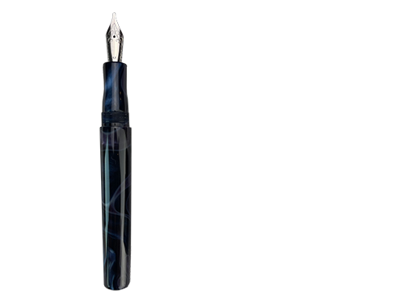

What are the major parts of a Fountain Pen
While there are different types of filling systems for fountain pens, many pens share the same major parts.
Hint: Hover over the image below to learn the names of the major components of a Fountain Pen.

Created by Alex Gomes